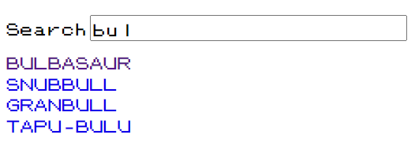

useEffect
What is it good for?
Valid use cases
- Subscribing to events (window, ...)
- Releasing resources to prevent a memory leak
- Cancelling a network request/asynchronous operation
Cleanup is necessary for...
- Unsubscribing from a pub-sub interface
- Releasing resources to prevent a memory leak
- Cancelling a network request/asynchronous operation
useEffect as last-resort
-
Don't use useEffect to update state based on props or state,
whenever possible calculate all dependent states on the fly.
If the calculation is expensive, use useMemo - Don't invoke callbacks on state change, whenever possible invoke callbacks as part of event handling logic.
Exercise
Add a search input and use useEffect to implement a debounce on the pokemon list as a filter.
Add a search input and use useEffect to implement a debounce on the pokemon list as a filter.
Use setTimeout & clearTimeout to build a delay
Solution
SearchPanel.tsx
ListPage.tsx
ListPage.tsx
Custom Hooks
We can reuse a concrete Hook logic by extracting it into a custom Hook .
The logic to be extracted can use a single or multiple Hooks.
We simply move the logic into its own function.
In the component we just call this function.
Stick to the Hooks naming convention: use*
Exercise
- Extract the data fetching logic of the pokemon details page to a custom Hook.
- Stretch goal: Find a way to not have to know how the url is composed within the custom hook

Solution
usePokemonDetails.ts
DetailPage.tsx
Stretch Goal: usePokemonDetails.ts
Stretch Goal: DetailPage.tsx
Recap
We learned…
- How to use useEffect
- When to use useEffect and when to use a different approach to reach your goal
- How to cleanup side effects in useEffect
- How to extract Hook logic from components into Custom Hooks